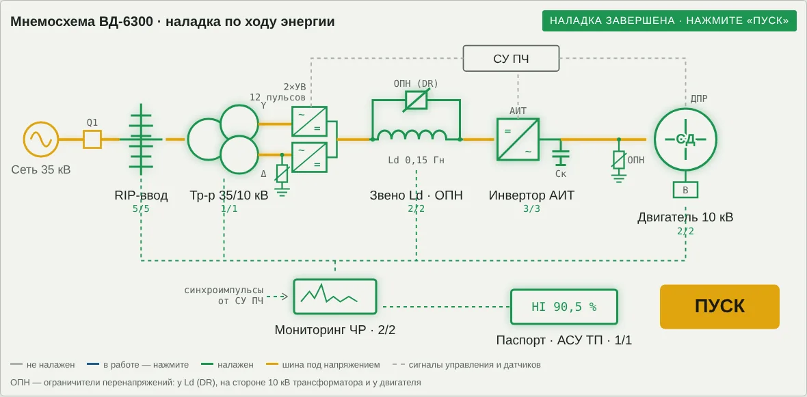
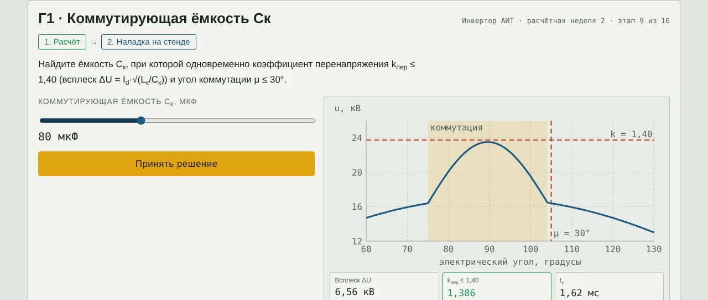

Техника высоких напряжений
Методические указания для студентов
Наладка привода ВД-6300
Деловая игра по расчётному заданию «Вентильный двигатель 10 кВ», недели 1–15
Цель занятия. Закрепить расчёты всех 15 недель задания на одном объекте — высоковольтном частотно-регулируемом приводе ВД-6300 — и научиться принимать по ним инженерные решения: выбирать размеры, номиналы и режимы так, чтобы изоляция и оборудование работали с запасом. Что понадобится: компьютер или телефон с браузером, калькулятор с натуральным логарифмом и степенями, эти указания. Ссылку на игру выдаёт преподаватель. Продолжительность: 60–90 минут; прогресс сохраняется в браузере, можно продолжить позже. |
1. Объект: привод ВД-6300
Привод состоит из семи аппаратов, через которые энергия идёт от сети к двигателю. Наладка ведётся в том же порядке: следующий аппарат открывается, когда налажен предыдущий; на мнемосхеме он загорается, и по шине идёт ток.

Рис. 1. Мнемосхема привода ВД-6300 после наладки: сеть 35 кВ → RIP-ввод → трансформатор 35/10 кВ с 12-пульсным выпрямителем → звено Ld с ОПН → инвертор АИТ → двигатель 10 кВ; мониторинг ЧР и паспорт изоляции в АСУ ТП
| Аппарат | Этапы | Что настраивается на стенде |
|---|---|---|
| Ввод 35 кВ | А1–А5 | диаметр трубы; число обкладок; число рёбер; рабочее поле RIP; допустимая пустота |
| Трансформатор 8 МВА | Б1 | схема выпрямителя и охлаждение |
| Реактор Ld и ОПН | В1, В2 | охлаждение и поверхность; Uнр и класс ОПН |
| Инвертор АИТ | Г1–Г3 | ёмкость Cк; ёмкость снаббера Cs; номинал резистора |
| Двигатель 10 кВ | Д1, Д2 | толщина изоляции δ; сопротивление покрытия ρs |
| Мониторинг ЧР | Е1, Е2 | ширина строба; диагноз по портретам PRPD |
| Паспорт изоляции | Ж1 | баллы трёх узлов → индекс HI |
2. Правила игры
Каждый из 16 этапов состоит из двух шагов: расчёт (ввести число) и наладка на интерактивном стенде (ползунки, переключатели, кнопка «Принять решение»). Всего 32 проверки.
Числовой ответ принимается с допуском ±3 %; дробную часть можно отделять запятой или точкой. Единицы указаны рядом с полем ввода.
«Жизни» — разрядный промежуток «стержень — плоскость». Каждая ошибка удлиняет стример на шаг; шестая ошибка — пробой изоляции, игра начинается заново. Три верных ответа подряд с первой попытки «сушат изоляцию» и убирают один шаг.
Очки: верно с первой попытки — 100, после ошибки — 50; подсказка снимает 50 очков. Подсказка одна на всю игру. Максимум — 3200.
На стенде зелёные показания — условие выполнено, красные — нет. Выполнить условия мало: чаще всего нужно наименьшее или наибольшее подходящее значение. Читайте задание до конца.
После последнего этапа нажмите «Пуск», затем «Скопировать итог» и отправьте текст преподавателю.

Рис. 2. Пример стенда: этап Г1, подбор коммутирующей ёмкости. Слева — ползунок и кнопка «Принять решение», справа — форма напряжения и индикаторы условий
3. Порядок работы на каждом этапе
Прочитайте «Дано» и пояснение в этих указаниях, выпишите формулы.
Выполните расчёт на калькуляторе, следите за единицами. Запишите ответ в бланк (приложение).
Введите ответ в игре. Ошиблись — проверьте перевод единиц и порядок действий.
На стенде сначала оцените решение расчётом, затем подтвердите его ползунком. Убедитесь, что все показания зелёные и выбрано наименьшее или наибольшее значение, которое требует задание.
Запишите выбранное решение и показания стенда в бланк.
4. Этапы наладки
Ввод 35 кВ
RIP-ввод 35 кВ подводит питание сети к трансформатору. Пять этапов: поле у трубы, уравнительные обкладки, путь утечки покрышки, старение изоляции и частичные разряды.
А1 · Труба ввода по полю (расчётная неделя 4)
Дано. RIP-ввод — коаксиальная система: токоведущая труба радиусом r0 внутри изоляционного остова радиусом R = 45 мм. Испытательное напряжение U = 95 кВ. Стандартный ряд труб: Ø20, Ø25, Ø30, Ø40, Ø50 мм.
Пояснение. Наибольшее поле — у поверхности внутреннего проводника. При заданном R поле минимально при r0 = R/e: тонкая труба даёт малый радиус кривизны, толстая оставляет тонкий слой изоляции. Радиус — половина диаметра.
(1)
(2)
Расчёт. Найти: наибольшее поле у трубы Ø20 мм, кВ/мм.
Наладка. Подобрать трубу из ряда так, чтобы поле у её поверхности было наименьшим (по току 400 А подходят все).
Ответ: расчёт ____________ кВ/мм; решение наладки ______________________
А2 · Уравнительные обкладки (расчётная неделя 5)
Дано. Конденсаторный ввод: металлические обкладки делят изоляцию на N слоёв с равными ёмкостями Ck. Испытательное напряжение U = 95 кВ. Напряжение начала скользящих разрядов у края обкладки Uн.ск = 20,3 кВ.
Пояснение. Слои включены последовательно и несут одинаковый заряд, поэтому при равных ёмкостях ступени напряжения равны. Скользящий разряд — разряд вдоль поверхности диэлектрика с большой удельной ёмкостью; его канал растёт очень быстро. Ступень берут с запасом 2.
(3)
(4)
(5)
Расчёт. Найти: ступень напряжения на один слой при N = 8, кВ.
Наладка. Выбрать наименьшее число обкладок N (4…14), при котором ступень при испытании не больше Uн.ск/2 = 10,15 кВ.
Ответ: расчёт ____________ кВ; решение наладки ______________________
А3 · Покрышка и путь утечки (расчётная неделя 6)
Дано. Наибольшее рабочее напряжение Uнр = 40,5 кВ; II степень загрязнения: λэ = 2,35 см/кВ; коэффициент формы k = 1,1. Покрышка высотой 420 мм; варианты: 8 рёбер (вылет 40/30 мм), 10 рёбер (40/30), 12 рёбер (45/35).
Пояснение. Длина пути утечки Lут — расстояние по поверхности рёбер, определяет работу в грязи и влаге. Сухоразрядное расстояние Lсух — путь по воздуху, определяет грозовой импульс. s/p — отношение шага рёбер к вылету: при s/p < 0,8 соседние рёбра перекрываются дугой.
(6)
(7)
(8)
Расчёт. Найти: нормированная длина пути утечки Lут, мм.
Наладка. Выбрать 8, 10 или 12 рёбер: путь утечки не меньше нормы и s/p ≥ 0,8.
Ответ: расчёт ____________ мм; решение наладки ______________________
А4 · Старение RIP: рабочее поле на 30 лет (расчётная неделя 10)
Дано. Кратковременная прочность RIP E0 = 25 кВ/мм при t0 = 1 мин; показатель кривой жизни n = 9; срок службы tсл = 30 лет = 262 800 ч; запас на разброс kз = 1,5.
Пояснение. Кривая жизни — зависимость срока службы от напряжённости. Времена подставляют в одних единицах (1 мин = 1/60 ч). Рабочее поле должно удовлетворять kз·Eраб ≤ Eдл. Правило Монтзингера: +8…10 °C сокращают срок примерно вдвое.
(9)
(10)
(11)
Расчёт. Найти: допустимая длительная напряжённость Eдл на 30 лет, кВ/мм.
Наладка. Ползунком Eраб = 1,0…4,0 кВ/мм найти наибольшее рабочее поле, при котором срок при E = 1,5·Eраб не меньше 30 лет.
Ответ: расчёт ____________ кВ/мм; решение наладки ______________________
А5 · Допустимая пустота в RIP (расчётная неделя 11)
Дано. Схема a–b–c: пустота пробивается при Uпр = 867 В, после разряда остаётся Uост = 0,25·Uпр; ёмкость изоляции над пустотой Cb = 10 фФ. Поле в пустоте 6,7 кВ/мм при синусе и 8,7 кВ/мм со всплесками АИТ (kп = 1,3); давление p = 760 мм рт. ст.
Пояснение. Частичный разряд (ЧР) замыкает только часть изоляции, например газовую пустоту. Ca — ёмкость остальной изоляции, Cb — изоляции над пустотой, Cc — пустоты. Заряд «кажущийся»: его измеряют на выводах. Поле в пустоте в εr раз выше, чем в изоляции. Пустота разряжается, когда поле в ней выше её пробивного поля по закону Пашена.
(12)
(13)
(14)
Расчёт. Найти: кажущийся заряд q, пКл.
Наладка. Назначить норму приёмки: наибольший размер пустоты (0,02 / 0,05 / 0,1 / 0,2 мм), которая не разряжается при питании от АИТ.
Ответ: расчёт ____________ пКл; решение наладки ______________________
Трансформатор 8 МВА
Сухой трансформатор 35/10 кВ с литой изоляцией питает выпрямитель. Этап: гармоники тока и нагрев обмотки.
Б1 · Гармоники и нагрев трансформатора (расчётная неделя 12)
Дано. Сухой трансформатор 8 МВА: P0 = 12 кВт, Pk = 60 кВт (Pdc 88 %, PEC 8 %, POSL 4 %), загрузка β = 0,93, норма перегрева обмотки 100 K (класс F).
Пояснение. Вихревые потери PEC растут как h², поэтому высшие гармоники греют непропорционально. p-пульсный выпрямитель даёт гармоники h = kp ± 1 с амплитудой ≈ I1/h. В 12-пульсной схеме мосты питаются от обмоток «звезда» и «треугольник» со сдвигом 30°. Класс F: 155 °C = 40 + 100 + 15. AN — естественное охлаждение, AF — вентиляторы.
(15)
(16)
Расчёт. Найти: перегрев обмотки Δθ при синусоидальном токе, K.
Наладка. Выбрать схему выпрямителя (6 / 12 пульсов) и охлаждение (AN / AF): перегрев не больше 100 K без вентиляторов.
Ответ: расчёт ____________ K; решение наладки ______________________
Реактор Ld и ОПН
Реактор звена постоянного тока сглаживает ток, ОПН защищает звено при обрыве тока. Два этапа: охлаждение реактора и выбор ОПН.
В1 · Охлаждение реактора Ld (расчётная неделя 12)
Дано. Мощность привода P1 = 6,5 МВт; удельные потери в меди 0,2 %; добавка на магнитопровод 15 %. Коэффициент теплоотдачи α = 12 Вт/(м²·К) при AN и 35 — при AF; поверхность S = 6…18 м² (шаг 2); воздух 40 °C; теплоёмкость C = 2,3 МДж/К.
Пояснение. Нагрев по закону Ньютона: перегрев пропорционален потерям и обратно пропорционален теплоотдаче и площади. Тепловая постоянная T — за это время перегрев достигает 63 % установившегося.
(17)
(18)
(19)
Расчёт. Найти: полные потери реактора P, кВт.
Наладка. Подобрать охлаждение и поверхность: горячая точка не выше 155 °C (Δθ ≤ 100 K); приоритет — естественное охлаждение и наименьшая S.
Ответ: расчёт ____________ кВт; решение наладки ______________________
В2 · ОПН звена постоянного тока (расчётная неделя 9)
Дано. Ld = 0,15 Гн; Id = 510 А; ток перегрузки I = 1,5·Id = 765 А; запас 1,2; наибольшее рабочее линейное на входе выпрямителя 12 кВ. Ряд Uнр: 15, 18, 21 кВ; классы энергоёмкости 1, 2, 3 (w ≈ 2,5; 4,5; 7,0 кДж на 1 кВ Uнр); Uост ≈ 1,9·Uнр.
Пояснение. ОПН — варистор на основе ZnO с резко нелинейной характеристикой: в работе почти не проводит, при перенапряжении пропускает большой ток. При обрыве тока энергия реактора уходит в ОПН. Uнр — наибольшее длительное рабочее напряжение ОПН, Uост — остающееся напряжение (защитный уровень).
(20)
(21)
(22)
Расчёт. Найти: расчётная энергия Wрасч, кДж.
Наладка. Выбрать наименьшие подходящие Uнр и класс энергоёмкости.
Ответ: расчёт ____________ кДж; решение наладки ______________________
Инвертор АИТ
Автономный инвертор тока на приборах SGCT переключает ток звена в фазы двигателя. Три этапа: коммутирующая ёмкость, снаббер и его резистор.
Г1 · Коммутирующая ёмкость Cк (расчётная неделя 2)
Дано. Двигатель: U = 10 кВ, S = 7216 кВ·А, f = 50 Гц, x″d = 0,15 о.е.; ток звена Id = 510 А; Uраб.max = 12 кВ. Ползунок Cк = 40…150 мкФ (шаг 10).
Пояснение. АИТ — автономный инвертор тока: реактор держит ток звена постоянным, инвертор переключает его в фазы двигателя (6 коммутаций за период). В контуре коммутации две фазы двигателя. Энергия индуктивности переходит в конденсатор: ½LкId² = ½CкΔU². Больше Cк — меньше всплеск, но дольше коммутация.
(23)
(24)
(25)
Расчёт. Найти: индуктивность контура коммутации Lк, мГн.
Наладка. Найти Cк, при которой одновременно kпер ≤ 1,40 и μ ≤ 30°.
Ответ: расчёт ____________ мГн; решение наладки ______________________
Г2 · Снаббер: ёмкость Cs (расчётная неделя 7)
Дано. Выключаемый ток с перегрузкой IT = 765 А; критическая скорость нарастания напряжения прибора (dU/dt)кр ≈ 1000 В/мкс; допустимая — половина. Ряд Cs: 1,0; 1,5; 2,0; 3,0 мкФ.
Пояснение. Снаббер — RC-цепочка параллельно прибору; пока ток переходит в конденсатор, напряжение растёт линейно. Удобное соотношение: 1 А/мкФ = 1 В/мкс.
(26)
(27)
Расчёт. Найти: наименьшая ёмкость Cs, мкФ.
Наладка. Выбрать из ряда ближайшую ёмкость не меньше расчётной (большая — лишние потери).
Ответ: расчёт ____________ мкФ; решение наладки ______________________
Г3 · Потери и резистор снаббера (расчётная неделя 8)
Дано. Cs = 2 мкФ; рабочее напряжение плеча 20,7 кВ на N = 7 приборов; частота f = 50 Гц; всего 42 снаббера; мощность привода 6,3 МВт. Ряд резисторов: 0,5; 1,0; 1,5; 2,5 кВт.
Пояснение. За цикл в резисторе рассеивается ½CsU² при заряде и ½CsU² при разряде, независимо от Rs. В средние потери идёт рабочее напряжение на приборе. Запас по мощности = номинал / рабочие потери.
(28)
Расчёт. Найти: мощность потерь в одном резисторе PR, Вт.
Наладка. Выбрать номинал водоохлаждаемого резистора с запасом не меньше 1,5 — ближайший из ряда.
Ответ: расчёт ____________ Вт; решение наладки ______________________
Двигатель 10 кВ
Синхронный двигатель 10 кВ компрессорной станции. Два этапа: толщина корпусной изоляции и противокоронное покрытие.
Д1 · Корпусная изоляция статора (расчётная неделя 1)
Дано. Uном = 10 кВ; K = 1,2; кратность коммутационного всплеска kкомм = 1,4; Eдл.доп = 4,0 кВ/мм; Eкр ≈ 25 кВ/мм; запас kз = 3; технологический шаг толщины 0,5 мм.
Пояснение. Корпусная изоляция разделяет медь стержня и заземлённый сердечник, на неё действует фазное напряжение. √2 — переход к амплитуде, √3 — от линейного к фазному. Толщину выбирают по двум критериям и округляют вверх: лишняя толщина ухудшает теплоотвод.
(29)
(30)
(31)
Расчёт. Найти: расчётное пиковое напряжение Uрасч, кВ.
Наладка. Выбрать наименьшую толщину δ из ряда (2,0…5,0 мм, шаг 0,5), удовлетворяющую обоим условиям.
Ответ: расчёт ____________ кВ; решение наладки ______________________
Д2 · Противокоронное покрытие (расчётная неделя 3)
Дано. Удельная ёмкость изоляции C0 = 1,14·10⁻⁸ Ф/м²; ω = 314 с⁻¹; напряжение 50 Гц U = 9,80 кВ; всплеск ΔU = 6,56 кВ с fэкв = 1/(2tк) = 309 Гц. Ползунок ρs = 10⁷…10¹¹ Ом по декадам.
Пояснение. Полупроводящее покрытие на выходе стержня из паза выравнивает поле вдоль поверхности. Это распределённая RC-цепь: λ — длина, на которой потенциал падает в e раз; длина покрытия ≈ 3λ. Низкое ρs даёт длинную λ, но больший ёмкостный ток и нагрев.
(32)
Расчёт. Найти: длина затухания λ при ρs = 10⁹ Ом, мм.
Наладка. Подобрать наибольшее ρs, при котором Eτ ≤ 0,5 кВ/мм и при 50 Гц, и на всплеске.
Ответ: расчёт ____________ мм; решение наладки ______________________
Мониторинг ЧР
Система контроля частичных разрядов. Два этапа: стробирование помех инвертора и диагноз по фазовым портретам.
Е1 · Стробирование помех АИТ (расчётная неделя 13)
Дано. Конденсатор связи Cс = 80 пФ, измерительный резистор Rи = 50 Ом. Период T = 20 мс, 6 коммутаций, «звон» помехи ≈ 50 мкс после каждой. Ползунок полуширины строба ±w = 10…150 мкс.
Пояснение. Cс и Rи образуют фильтр верхних частот: 50 Гц не проходит, импульсы ЧР проходят. Спектр помех коммутации перекрывает полосу ЧР, поэтому их вырезают по времени — стробированием по синхроимпульсам от системы управления ПЧ.
(33)
(34)
(35)
Расчёт. Найти: граничная частота fс, МГц.
Наладка. Выбрать w: строб накрывает помеху (w ≥ 50 мкс), слепое время не больше 3 %.
Ответ: расчёт ____________ МГц; решение наладки ______________________
Е2 · Диагноз по PRPD (расчётная неделя 14)
Дано. Портрет ЧР: Q95+ = 419 пКл, Q95− = 168 пКл. На стенде — четыре фазовые диаграммы, каждой нужно назначить диагноз: пустота, поверхностный разряд, корона, помеха АИТ.
Пояснение. PRPD — фазовая диаграмма: по горизонтали фаза 0…360°, по вертикали заряд импульса. Q95 — заряд, который не превышают 95 % импульсов. Q+/Q− ≈ 1 — внутренняя пустота; > 2 или < 0,5 — поверхность или паз; узкое облако у пика одной полуволны — корона; узкие полосы через равные углы — помеха преобразователя.
(36)
Расчёт. Найти: отношение Q+/Q−.
Наладка. Поставить диагноз каждому из четырёх портретов.
Ответ: расчёт ____________; решение наладки ______________________
Паспорт изоляции
АСУ ТП сводит результаты в паспорт изоляции. Этап: баллы узлов и индекс состояния HI.
Ж1 · Паспорт и индекс HI (расчётная неделя 15)
Дано. Поле в корпусной изоляции статора 3,92 кВ/мм при норме 4,0. В паспорте восемь узлов с весами wi; пять баллов заданы, три (снабберы 383/500 В/мкс; реактор 89/100 K; трансформатор 93,5/100 K) ставит студент.
Пояснение. Шкала баллов: 1,0 — запас ≥ 50 %; 0,9 — 10…50 %; 0,8 — меньше 10 %; 0,5 — на границе; 0 — норма нарушена. Шкала HI: ≥ 85 % — хорошее; 70…85 % — удовлетворительное; 50…70 % — ухудшенное; < 50 % — критическое.
(37)
(38)
Расчёт. Найти: запас корпусной изоляции статора по полю, %.
Наладка. Поставить баллы трём узлам по шкале паспорта.
Ответ: расчёт ____________ %; решение наладки ______________________
5. Справочные данные
| Величина | Значение |
|---|---|
| ε0 — электрическая постоянная | 8,854·10⁻¹² Ф/м |
| e — основание натурального логарифма | 2,718 |
| √2; √3 | 1,414; 1,732 |
| ω при 50 Гц | 314 с⁻¹ |
| Период при 50 Гц | 20 мс; 1° = 55,6 мкс |
| 1 мкФ; 1 пФ; 1 фФ | 10⁻⁶; 10⁻¹²; 10⁻¹⁵ Ф |
| 1 мГн; 1 пКл | 10⁻³ Гн; 10⁻¹² Кл |
| 1 А/мкФ | 1 В/мкс |
| 1 год; 1 мин | 8760 ч; 1/60 ч |
| Корень n-й степени | x1/n = e(ln x)/n |
Перед подстановкой переводите величины в согласованные единицы: при U в кВ и S в МВ·А сопротивление Z = U²/S получается в омах; радиусы и толщины в одной формуле — в одних единицах.
6. Контрольные вопросы
(А1) Почему у коаксиальной системы существует оптимальный радиус внутреннего проводника?
(А2) Почему при равных ёмкостях слоёв напряжение распределяется поровну?
(А3) Чем отличаются длина пути утечки и сухоразрядное расстояние?
(А4) Что показывает кривая жизни изоляции и почему важен показатель n?
(А5) Почему поле в газовой пустоте больше, чем в окружающей изоляции?
(Б1) Почему 12-пульсная схема меньше греет трансформатор?
(В1) Почему выгодна большая тепловая постоянная реактора?
(В2) Почему Uнр ОПН нельзя выбирать «с большим запасом»?
(Г1) Почему при увеличении Cк растёт угол коммутации?
(Г2) Почему ёмкость снаббера нельзя брать «чем больше, тем лучше»?
(Г3) Как изменятся потери в снабберах при ШИМ 300 Гц?
(Д1) Почему питание от преобразователя требует более толстой изоляции?
(Д2) Почему всплески инвертора опаснее для лобовых частей обмотки, чем 50 Гц?
(Е1) Почему помехи коммутаций нельзя убрать частотным фильтром?
(Е2) По какому признаку на PRPD помеху преобразователя отличают от ЧР?
(Ж1) Зачем паспорт изоляции сводят к одному индексу HI?
7. Отчёт и оценка
В отчёт входят: заполненный бланк (приложение), текст итога из игры («Скопировать итог»: очки, оставшийся запас прочности, ошибки по аппаратам, время) и письменные ответы на три контрольных вопроса по выбору преподавателя.
| Очки (максимум 3200) | Оценка |
|---|---|
| 2900 и больше | «отлично» |
| 2400–2899 | «хорошо» |
| 1800–2399 | «удовлетворительно» |
| меньше 1800 или пробой | повторное прохождение |
Приложение. Бланк отчёта
ФИО ______________________________ Группа ________ Дата ________
| Этап | Что найти | Расчёт | Решение наладки | Ошибок |
|---|---|---|---|---|
| А1 | Наибольшее поле у трубы Ø20 мм, кВ/мм | |||
| А2 | Ступень напряжения на один слой при N = 8, кВ | |||
| А3 | Нормированная длина пути утечки Lут, мм | |||
| А4 | Допустимая длительная напряжённость Eдл на 30 лет, кВ/мм | |||
| А5 | Кажущийся заряд q, пКл | |||
| Б1 | Перегрев обмотки Δθ при синусоидальном токе, K | |||
| В1 | Полные потери реактора P, кВт | |||
| В2 | Расчётная энергия Wрасч, кДж | |||
| Г1 | Индуктивность контура коммутации Lк, мГн | |||
| Г2 | Наименьшая ёмкость Cs, мкФ | |||
| Г3 | Мощность потерь в одном резисторе PR, Вт | |||
| Д1 | Расчётное пиковое напряжение Uрасч, кВ | |||
| Д2 | Длина затухания λ при ρs = 10⁹ Ом, мм | |||
| Е1 | Граничная частота fс, МГц | |||
| Е2 | Отношение Q+/Q− | |||
| Ж1 | Запас корпусной изоляции статора по полю, % |
Итог игры: очки ______ запас прочности ______ время ______ оценка ______